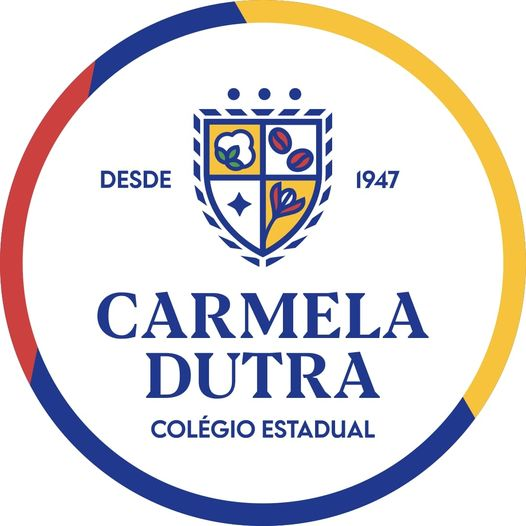
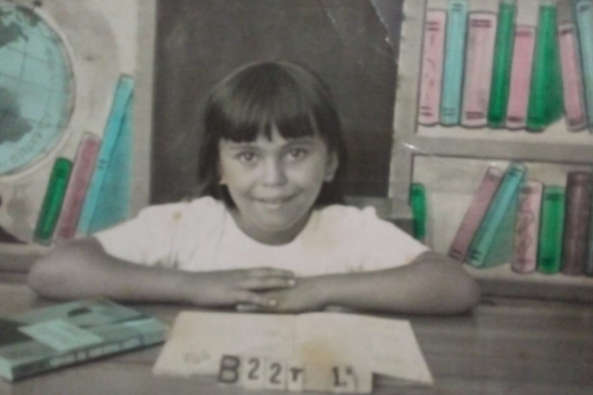

|  |
O Colégio Carmela Dutra teve seu início em meados de 1947, apesar de não constar na documentação oficial, sendo oficializado sua criação com o decreto nº 7457 de 29/03/1962, publicado no D.O. nº 24 de 06/04/1962 como Grupo EScolar Carmela Dutra. |
Prof: Ricardo - ano 1986 |
Mãe do prof. Ricardo - ano 1967 |